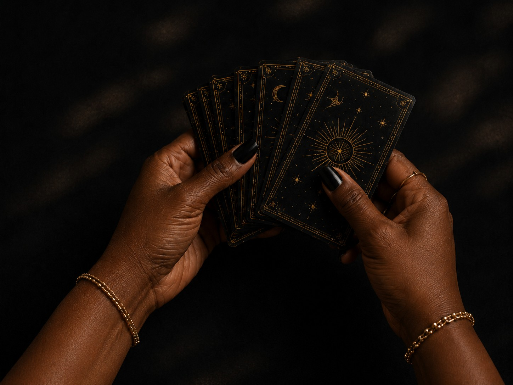

FAQ
Everything you need clarity on.

The Midnight Draw is available for private celebrations, seasonal gatherings, markets and pop ups, special events, and brand activations or corporate events.
Guests receive individual mini readings throughout the event. The format is designed around your guest count, timeline, and overall event flow so the experience feels natural and does not interrupt the gathering.
Reading length varies depending on the event format and number of guests. Shorter readings work well for larger events and help keep the experience moving, while smaller gatherings may allow for more time with each guest. Once I know your guest count and timeline, I can recommend the best format.
That depends on the length of your event and the style of readings being offered. Share your estimated guest count and event timing when you inquire, and I will recommend a format that works best for your event.
Not at all. Many guests are experiencing tarot for the first time. My readings are approachable, conversational, and designed to make everyone feel comfortable whether they already love tarot or are simply curious.
A designated area for readings with enough space for the setup and for guests to sit comfortably. I aim to keep the setup polished and cohesive with the event rather than taking over the space. Any specific venue or setup needs can be confirmed once I know more about your event.
Readings are intended to feel personal and one on one within the event setting. The level of privacy will depend on the venue and available space, and I am happy to work with the host to choose the best location for the reading area.
Yes. The Midnight Draw is available for events throughout Los Angeles, Orange County, and Southern California, with additional travel considered depending on the location. Include your event location in your inquiry and I will confirm availability.
Booking early is encouraged, especially for weekends, holidays, and seasonal events. If your event is coming up soon, you are still welcome to inquire. If the date is available, I would be happy to discuss it.
Yes. A 50% deposit is required to secure your event date.
Yes, absolutely. Readings can be shaped around the tone, theme, or intention of your gathering. For seasonal events, private celebrations, brand activations, or themed experiences, we can create prompts or a reading approach that feels connected to the event while still allowing each guest to have an individual experience.
Still Have Questions?
I’m here to bring clarity. Reach out through the Contact page.
Inquire About Your Event